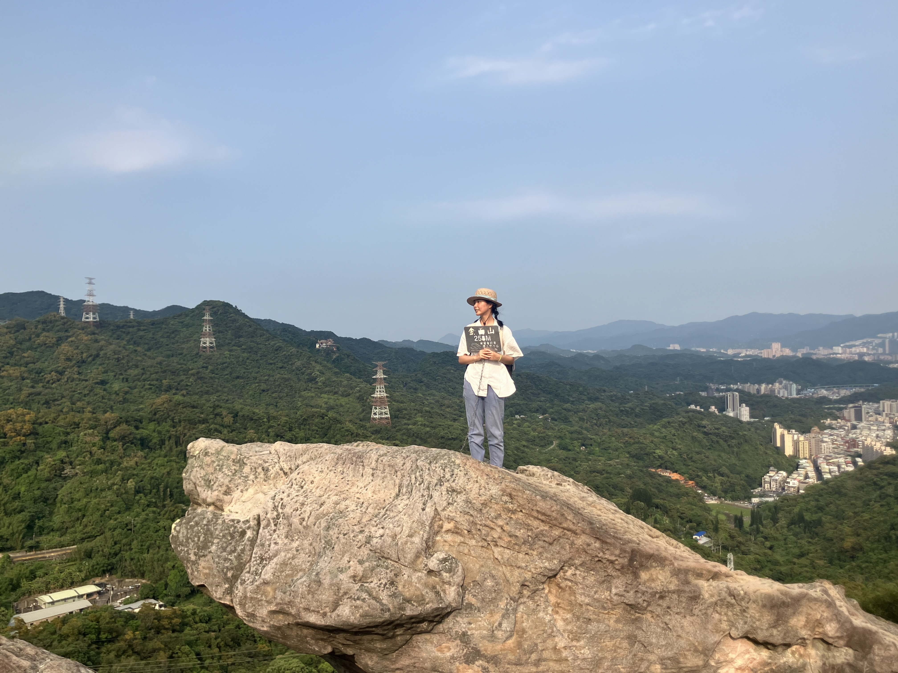
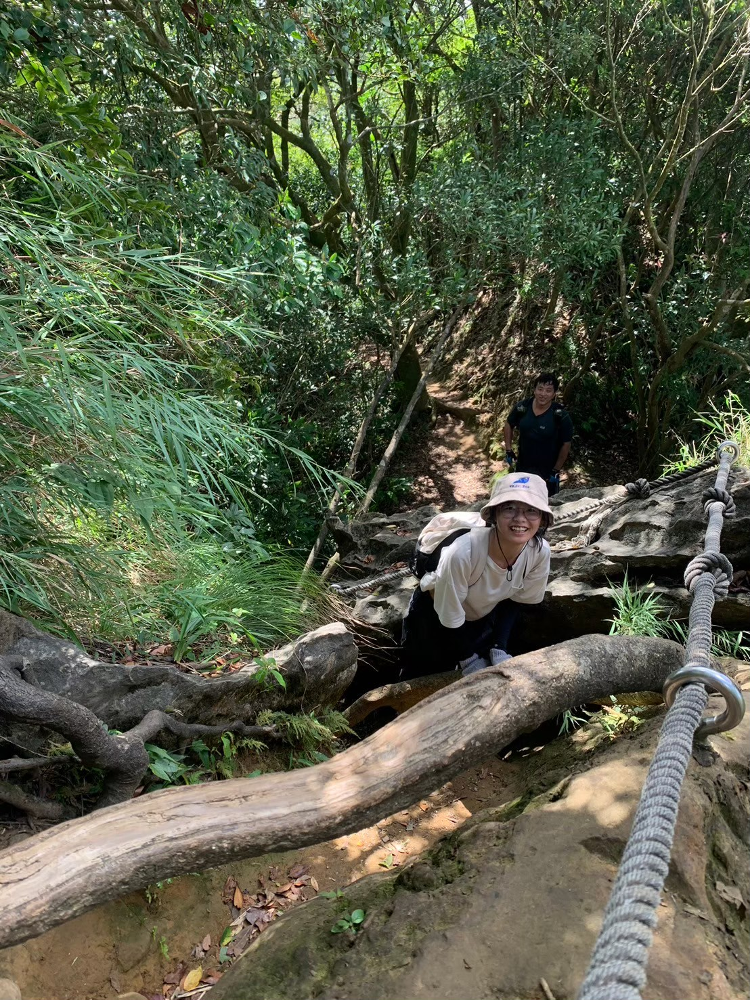
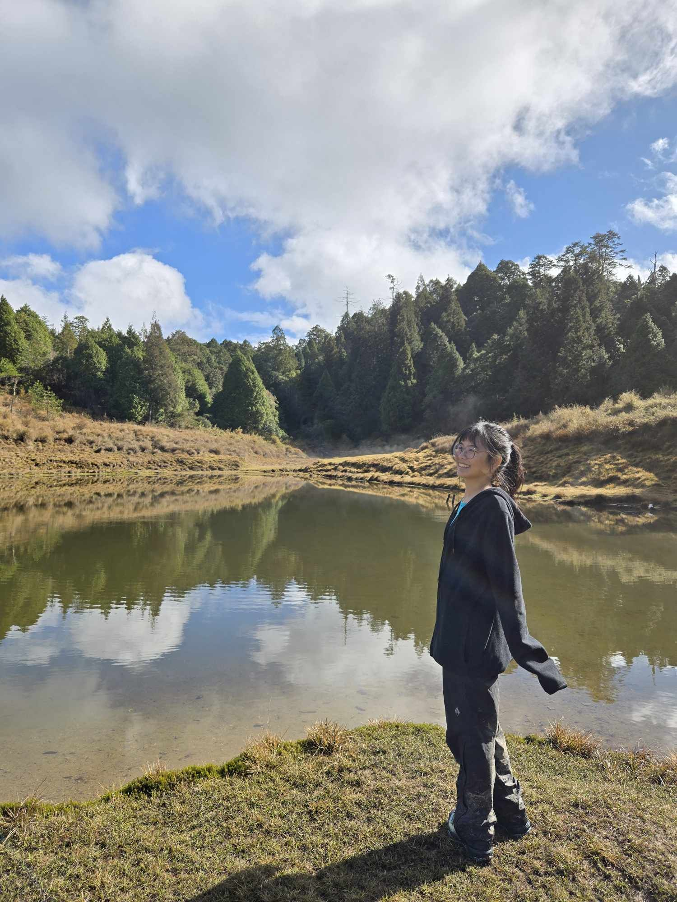

hola 😀
這裡是沈柔萱的介紹，先看看他長怎麼樣子再決定要不要繼續看下去吧!

這裡是沈柔萱的介紹，先看看他長怎麼樣子再決定要不要繼續看下去吧!
從小去露營，喜歡上了大自然，但是高中嚴重荒廢這項休閒娛樂，在升上大學後，漸漸把這項興趣撿回來:)目前為止，每一次在山上的時光都是奇幻旅程...
| 去過的山... | 喜歡的照片... | 小記錄(about那座山... |
|---|---|---|
| 金面山 |  | 有四隻貓貓在論劍廷有個家，會遇到許多NPC駐守，例如吹簫的阿伯，特性是都很喜歡幫人拍照 |
| 皇帝殿 |  | 有裸露感的一條路線，路口有神祕小攤子，有垂直的山壁需要攀爬，是淑敏推薦的路線。 |
| 加羅湖 |  | 第一次的重裝登山，兩天一夜在潮濕的宜蘭，過的克難但很溫暖，第二天天晴有景，謝謝天氣之子。 |
| 嘉明湖 |

|
沒有想像中漂亮的景點，照片反而比較好看...三天兩夜很謝謝大家的扶持，手比愛心 |
因為記憶力不佳，但想要好好地把每次旅行的感動記下來，所以偶爾會寫寫文字...
和你們分享最近寫下之後，被自己文采感動到的一句話
寫下這段話時，正處在生活風雨飄搖的階段，但是和朋友一起唱著大人中，好像，一切根本沒甚麼大不了...